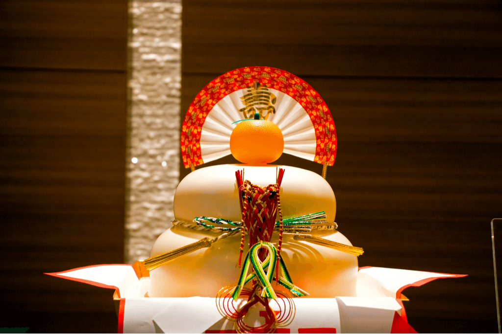

It's My Birthday!
On the 6th Nov (Please RSVP)

What to bring:
- Frog Balloons (I love frogs. They are very Kawaii desu ne)
- Kagami Cake (This mochi is for good luck and longivity)
- A couple of Kobans, for my inconvenience to have to host you
- An appetite (There will be lots of traditional Japanese food)
This is where you need to go:
Google
map link